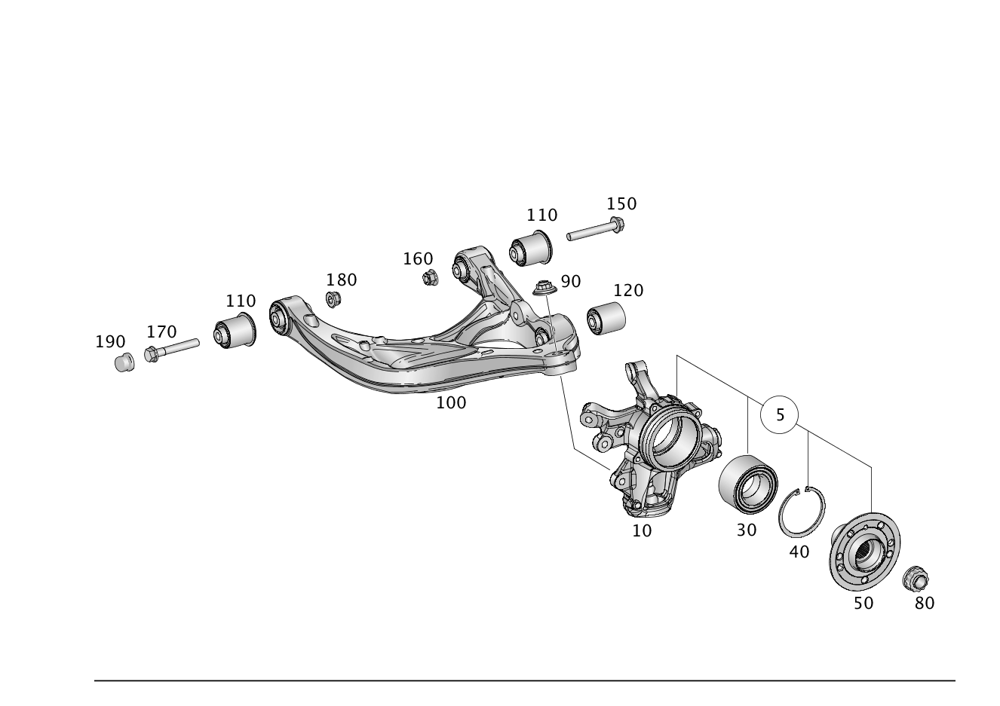

| № | Артикул | Название | Кол. | Примечание | Ограничение |
|---|---|---|---|---|---|
| 5 | A 166 350 04 08 | Кулак подвески (RADTRAEGER) | 1 | СЛЕВА, ПОЛНОСТЬЮ [002120] НЕ ПОСТАВЛЯЕТСЯ, ЗАКАЗЫВАТЬ ОТДЕЛЬНЫЕ ДЕТАЛИ | |
| 5 | A 166 350 05 08 | Кулак подвески (RADTRAEGER) | 1 | СПРАВА, В СБОРЕ [002120] НЕ ПОСТАВЛЯЕТСЯ, ЗАКАЗЫВАТЬ ОТДЕЛЬНЫЕ ДЕТАЛИ | |
| 10 | A 166 350 01 08 | - Кулак подвески (RADTRAEGER) | 1 | СЛЕВА | |
| 10 | A 166 350 02 08 | - Кулак подвески (RADTRAEGER) | 1 | СПРАВА | |
| 30 | A 166 981 00 06 | - Упорный шарикоподшипник (SCHRAEGKUGELLAGER) | 1 | КРОНШТЕЙН КОЛЕСА СЛЕВА | |
| 30 | A 166 981 00 06 | - Упорный шарикоподшипник (SCHRAEGKUGELLAGER) | 1 | КРОНШТЕЙН КОЛЕСА СПРАВА | |
| 40 | N 000472 095000 | - Стопорное кольцо (SICHERUNGSRING) | 1 | СТУПИЦА КОЛЕСА, СЛЕВА | |
| 40 | N 000472 095000 | - Стопорное кольцо (SICHERUNGSRING) | 1 | СТУПИЦА КОЛЕСА, СПРАВА | |
| 50 | A 166 357 02 08 | - Фланец заднего колеса (HINTERACHSRADFLANSCH) | 1 | СЛЕВА | |
| 50 | A 166 357 09 00 | - Фланец заднего колеса (HINTERACHSRADFLANSCH) | 1 | СЛЕВА | |
| 50 | A 166 357 02 08 | - Фланец заднего колеса (HINTERACHSRADFLANSCH) | 1 | СПРАВА | |
| 50 | A 166 357 09 00 | - Фланец заднего колеса (HINTERACHSRADFLANSCH) | 1 | СПРАВА | |
| 80 | A 002 990 58 54 | Гайка 12-гран. с фланцем (12-KANTMUTTER MIT FLANSCH) | 1 | ПОЛУОСЬ ЗАДНЕГО МОСТА К СТУПИЦЕ, СЛЕВА; M24X1,5 | |
| 80 | A 002 990 58 54 | Гайка 12-гран. с фланцем (12-KANTMUTTER MIT FLANSCH) | 1 | ПОЛУОСЬ ЗАДНЕГО МОСТА К СТУПИЦЕ, СПРАВА; M24X1,5 | |
| 90 | A 002 990 59 54 | Гайка 12-гран. с фланцем (12-KANTMUTTER MIT FLANSCH) | 1 | ПОПЕРЕЧНЫЙ РЫЧАГ К ПОВОРОТНОМУ КУЛАКУ СЛЕВА; M16 [414] СТАРУЮ ДЕТАЛЬ УСТАНАВЛИВАТЬ БОЛЬШЕ НЕ РАЗРЕШАЕТСЯ | |
| 90 | A 005 990 24 50 | Гайка с фланцем/вставкой (KOMBIMUTTER MIT FLANSCH) | 1 | ПОПЕРЕЧНЫЙ РЫЧАГ К ПОВОРОТНОМУ КУЛАКУ СЛЕВА; M16X1,5 | |
| 90 | A 002 990 59 54 | Гайка 12-гран. с фланцем (12-KANTMUTTER MIT FLANSCH) | 1 | ПОПЕРЕЧНЫЙ РЫЧАГ К ПОВОРОТНОМУ КУЛАКУ СПРАВА; M16 [414] СТАРУЮ ДЕТАЛЬ УСТАНАВЛИВАТЬ БОЛЬШЕ НЕ РАЗРЕШАЕТСЯ | |
| 90 | A 005 990 24 50 | Гайка с фланцем/вставкой (KOMBIMUTTER MIT FLANSCH) | 1 | ПОПЕРЕЧНЫЙ РЫЧАГ К ПОВОРОТНОМУ КУЛАКУ СПРАВА; M16X1,5 | |
| 100 | A 166 350 09 06 | Поперечный рычаг (QUERLENKER) | 1 | ВНИЗУ СЛЕВА | |
| 100 | A 166 350 10 06 | Поперечный рычаг (QUERLENKER) | 1 | СНИЗУ СПРАВА | |
| 110 | A 164 352 01 65 | - Резиновая опора (GUMMILAGER) | 2 | ПОПЕРЕЧН. РЫЧАГ СЛЕВА [417] БОЛЬШЕ НЕ ПОСТАВЛЯЕТСЯ, ЗАКАЗЫВАТЬ КОМПЛЕКТ ПОСТАВКИ | |
| 110 | A 164 352 01 65 | - Резиновая опора (GUMMILAGER) | 2 | ПОПЕРЕЧН. РЫЧАГ СПРАВА [417] БОЛЬШЕ НЕ ПОСТАВЛЯЕТСЯ, ЗАКАЗЫВАТЬ КОМПЛЕКТ ПОСТАВКИ | |
| 120 | A 164 326 06 81 | - Резиновая опора (GUMMILAGER) | 1 | ПОПЕРЕЧН. РЫЧАГ СЛЕВА | |
| 120 | A 166 326 02 81 | - Элепент подш., эл. (LAGERELEMENT, ELAST.) | 1 | ПОПЕРЕЧН. РЫЧАГ СЛЕВА | |
| 120 | A 164 326 06 81 | - Резиновая опора (GUMMILAGER) | 1 | ПОПЕРЕЧН. РЫЧАГ СПРАВА | |
| 120 | A 166 326 02 81 | - Элепент подш., эл. (LAGERELEMENT, ELAST.) | 1 | ПОПЕРЕЧН. РЫЧАГ СПРАВА | |
| 150 | N 910105 014018 | Винт с 6-гранной головкой (SECHSKANTSCHRAUBE) | 1 | ПОПЕРЕЧ. РЫЧАГ СЛЕВА; НА ИНТЕГРАЛЬН. КРОНШТ.; M14X1,5X100\-10.9 | |
| 150 | N 910105 014018 | Винт с 6-гранной головкой (SECHSKANTSCHRAUBE) | 1 | ПОПЕРЕЧ. РЫЧАГ СПРАВА; НА ИНТЕГРАЛЬН. КРОНШТ.; M14X1,5X100\-10.9 | |
| 160 | N 000000 003277 | Гайка (MUTTER) | 1 | ПОПЕРЕЧ. РЫЧАГ СЛЕВА; НА ИНТЕГРАЛЬН. КРОНШТ.; M14X1.5 | |
| 160 | N 000000 003277 | Гайка (MUTTER) | 1 | ПОПЕРЕЧ. РЫЧАГ СПРАВА; НА ИНТЕГРАЛЬН. КРОНШТ.; M14X1.5 | |
| 170 | N 000000 002353 | Винт с 6-гранной головкой (SECHSKANTSCHRAUBE) | 1 | ПОПЕРЕЧ. РЫЧАГ СЛЕВА; НА ИНТЕГРАЛЬН. КРОНШТ.; M14X95 | |
| 170 | N 000000 002353 | Винт с 6-гранной головкой (SECHSKANTSCHRAUBE) | 1 | ПОПЕРЕЧ. РЫЧАГ СПРАВА; НА ИНТЕГРАЛЬН. КРОНШТ.; M14X95 | |
| 180 | N 000000 003277 | Гайка (MUTTER) | 1 | ПОПЕРЕЧ. РЫЧАГ СЛЕВА; НА ИНТЕГРАЛЬН. КРОНШТ.; M14X1.5 | |
| 180 | N 000000 003277 | Гайка (MUTTER) | 1 | ПОПЕРЕЧ. РЫЧАГ СПРАВА; НА ИНТЕГРАЛЬН. КРОНШТ.; M14X1.5 | |
| 190 | A 164 352 00 59 | Защитный колпачок (SCHUTZKAPPE) | 1 | ПОПЕРЕЧНЫЙ РЫЧАГ СНИЗУ СЛЕВА К ИНТЕГРАЛЬНОЙ БАЛКЕ МОСТА | |
| 190 | A 164 352 00 59 | Защитный колпачок (SCHUTZKAPPE) | 1 | ПОПЕРЕЧНЫЙ РЫЧАГ СНИЗУ СПРАВА К ИНТЕГРАЛЬНОЙ БАЛКЕ МОСТА | |
| 200 | A 166 350 03 06 | Продольный рычаг (ZUGSTREBE) | 2 | ЛЕВЫЙ И ПРАВЫЙ | |
| 205 | A 166 353 19 00 | - Элепент подш., эл. (LAGERELEMENT, ELAST.) | 2 | ЛЕВЫЙ И ПРАВЫЙ | |
| 210 | N 000000 003840 | Винт с 6-гранной головкой (SECHSKANTSCHRAUBE) | 2 | ВЕРХНЯЯ ПРОДОЛЬНАЯ ШТАНГА НА КУЛАКЕ ПОДВЕСКИ, СЛЕВА И СПРАВА; M12X1,5X85 | |
| 220 | A 140 357 09 75 | Диск (SCHEIBE) | 2 | ВЕРХНЯЯ ПРОДОЛЬНАЯ ШТАНГА НА КУЛАКЕ ПОДВЕСКИ, СЛЕВА И СПРАВА | |
| 230 | N 000000 003276 | Гайка (MUTTER) | 2 | ВЕРХНЯЯ ПРОДОЛЬНАЯ ШТАНГА НА КУЛАКЕ ПОДВЕСКИ, СЛЕВА И СПРАВА; M12X1.5 | |
| 250 | N 910105 012011 | Винт с 6-гранной головкой (SECHSKANTSCHRAUBE) | 2 | ТЯГ.ПЕРЕБОРКА НА ИНТЕГРАЛ.КРОНШТ.СЛЕВА И СПРАВА; M12X1,5X60 | |
| 270 | N 000000 003276 | Гайка (MUTTER) | 2 | ТЯГ.ПЕРЕБОРКА НА ИНТЕГРАЛ.КРОНШТ.СЛЕВА И СПРАВА; M12X1.5 | |
| 300 | A 166 350 01 06 | CAMBER ARM (STURZSTREBE) | 1 | СЛЕВА | |
| 300 | A 166 350 02 06 | CAMBER ARM (STURZSTREBE) | 1 | СПРАВА | |
| 305 | A 166 353 19 00 | - Элепент подш., эл. (LAGERELEMENT, ELAST.) | 1 | СЛЕВА | |
| 305 | A 166 353 19 00 | - Элепент подш., эл. (LAGERELEMENT, ELAST.) | 1 | СПРАВА | |
| 310 | N 000000 003864 | Винт с 6-гранной головкой (SECHSKANTSCHRAUBE) | 1 | ВЕРТИК. ПЕРЕБОРКА НА КРОНШТ. КОЛЕСА СЛЕВА; M12X1,5X95 | |
| 310 | N 000000 003864 | Винт с 6-гранной головкой (SECHSKANTSCHRAUBE) | 1 | ВЕРТИК. ПЕРЕБОРКА НА КРОНШТ. КОЛЕСА СПРАВА; M12X1,5X95 | |
| 320 | N 000000 003276 | Гайка (MUTTER) | 1 | ВЕРТИК. ПЕРЕБОРКА НА КРОНШТ. КОЛЕСА СЛЕВА; M12X1.5 | |
| 320 | N 000000 003276 | Гайка (MUTTER) | 1 | ВЕРТИК. ПЕРЕБОРКА НА КРОНШТ. КОЛЕСА СПРАВА; M12X1.5 | |
| 330 | A 140 357 09 75 | Диск (SCHEIBE) | 1 | ВЕРТИК. ПЕРЕБОРКА НА КРОНШТ. КОЛЕСА СЛЕВА | |
| 330 | A 140 357 09 75 | Диск (SCHEIBE) | 1 | ВЕРТИК. ПЕРЕБОРКА НА КРОНШТ. КОЛЕСА СПРАВА | |
| 350 | A 002 990 39 20 | Эксцентриковый болт (EXZENTERSCHRAUBE) | 1 | ВЕРХНЯЯ ПОПЕРЕЧНАЯ ТЯГА К БАЛКЕ ЗАДНЕГО МОСТА СЛЕВА | |
| 350 | A 002 990 39 20 | Эксцентриковый болт (EXZENTERSCHRAUBE) | 1 | ВЕРХНЯЯ ПОПЕРЕЧНАЯ ТЯГА К БАЛКЕ ЗАДНЕГО МОСТА СПРАВА | |
| 360 | A 000 352 00 76 | Диск (SCHEIBE) | 1 | ВЕРХНЯЯ ПОПЕРЕЧНАЯ ТЯГА К БАЛКЕ ЗАДНЕГО МОСТА СЛЕВА | |
| 360 | A 000 352 00 76 | Диск (SCHEIBE) | 1 | ВЕРХНЯЯ ПОПЕРЕЧНАЯ ТЯГА К БАЛКЕ ЗАДНЕГО МОСТА СПРАВА | |
| 370 | N 000000 003276 | Гайка (MUTTER) | 1 | ВЕРХНЯЯ ПОПЕРЕЧНАЯ ТЯГА К БАЛКЕ ЗАДНЕГО МОСТА СЛЕВА; M12X1.5 | |
| 370 | N 000000 003276 | Гайка (MUTTER) | 1 | ВЕРХНЯЯ ПОПЕРЕЧНАЯ ТЯГА К БАЛКЕ ЗАДНЕГО МОСТА СПРАВА; M12X1.5 | |
| 400 | A 166 350 00 53 | Поперечная рулевая тяга (SPURSTANGE) | 2 | ЛЕВЫЙ И ПРАВЫЙ | |
| 430 | N 000000 003840 | Винт с 6-гранной головкой (SECHSKANTSCHRAUBE) | 2 | ТЯГА СХОЖДЕНИЯ НА КУЛАКЕ ПОДВЕСКИ, СЛЕВА И СПРАВА; M12X1,5X85 | |
| 440 | A 140 357 09 75 | Диск (SCHEIBE) | 2 | ТЯГА СХОЖДЕНИЯ НА КУЛАКЕ ПОДВЕСКИ, СЛЕВА И СПРАВА | |
| 450 | N 000000 003276 | Гайка (MUTTER) | 2 | ТЯГА СХОЖДЕНИЯ НА КУЛАКЕ ПОДВЕСКИ, СЛЕВА И СПРАВА; M12X1.5 | |
| 480 | A 002 990 38 20 | Эксцентриковый болт (EXZENTERSCHRAUBE) | 2 | РУЛ. ШТАНГА НА КРОНШТ. ЗАДН. МОСТА, СЛЕВА И СПРАВА; M12X1,5,78 | |
| 490 | A 000 352 00 76 | Диск (SCHEIBE) | 2 | РУЛ. ШТАНГА НА КРОНШТ. ЗАДН. МОСТА, СЛЕВА И СПРАВА | |
| 500 | N 000000 003276 | Гайка (MUTTER) | 2 | РУЛ. ШТАНГА НА КРОНШТ. ЗАДН. МОСТА, СЛЕВА И СПРАВА; M12X1.5 |
Позиций: 66 · подписано на схемах: 66 · колесо — плавный зум в курсор, перетаскивание — пан, двойной клик — зум, клик по артикулу — скопировать.